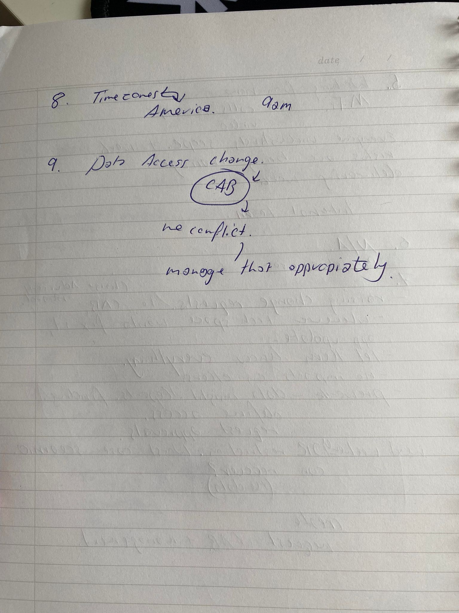
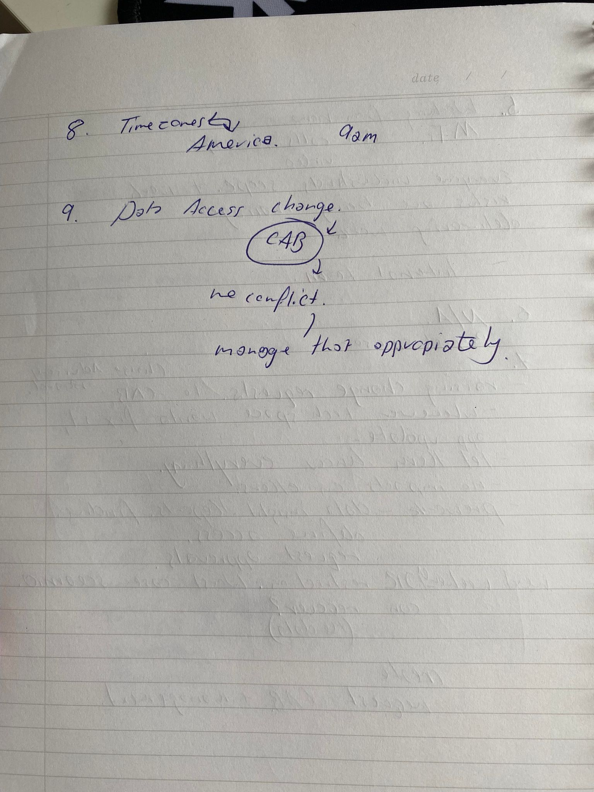

Sarah works as a cyber security analyst. She’s currently working on several projects for her company, her largest one at the moment is called DATA ACCESS REVITALATION PROJECT. It’s focus is on remediating direct access. Currently, everyone has access and can see the files of everyone else due to a mishap. It means there's a huge security risk as anyone can see all the files.
She is supporting the IT leadership team and head of Tech for her company. The company she works for is world wide, and it means everyone in one country, can access files in another. She is managing Asia and Australia as far as this project is concerned.
Her job is defining access for everyone. Who, what and where for everyone in the Asian and Australian side of her business. She places everyone into and Active Directory group, and gives them appropriate access to the files. This is a big deal, as people's credentials and accounts hold personal information which anyone can access at this time.
Sarah works in the Health and Car Insurance industry, just on the security end of things. The industry in monitored by APRA (Australian Prudential Regulation Authority). P.I.I (personal information such as name, birth, passport details) and P.C.I (Credit card information) are sources of data for the company. It is Sarah’s job to protect this data.
At this point of the interview, Sarah mentioned it to be similar to what Optus “SHOULD have been doing”. This is referring to the 2022 leak that Optus had endured, where thousands of personal information or ‘data’ was stolen.
Sarah explains that this is her only job. She does however have housekeeping tasks, such as answering emails and keeping up communication.
Stakeholders
Project managers (those in charge of the project and set tasks to the managers)
Sponsors
Head of Tech (A higher up who coordinates the use of technology)
CAB – Change Advisory Board
Project teammates (Sarah’s intermediate workmates who she works alongside to protect data. She is in regular contact with them.)
Support staff
DISO – Divisional Information Security Officer
Manager (Sarah’s immediate manager. “She sets me tasks and I complete them.”)
Sarah actual works from home since Covid so she relies heavily on her home set up. She uses Microsoft Teams to schedule, attend and change meetings. She answers calls (both video and not), and messages all throughout the day.
She says it's critical that everyone understands the scope and importance of the work. It’s important that the risks are being managed, and that the team can work fluidly with one another.
Sarah has no interaction with clients or investors. It is not her role to.
Her answer was simply “Raising change requests to CAB (Change Advisory Board)."
The CAB is the section in her work, who access the authorization and scheduling of changes.
“Whenever in a tech space, there's always problem and you need it fixed. Say, an update on an application, you let them know everything. And within a few hours the change should be complete.” she told me. They consider and complete the prework that there should be no impacts on others and that data insights, reports, findings, access and request approvals.
She said these are the most important aspects of her work. And take the most time because “they have to be right”.
Simply put; “time zones”. By the time her manager opens her computer, Sarah has already attended three meetings with her American co-workers. She feels like she ‘takes one for the team’ by doing the early shifts, but she loves her job even if at times it’s ‘too early’.
At this point, Sarah shows me her schedule, and says ‘see next weekend? We're running a scenario.’ Her work is going to trial a worst case scenario, on top of her normal workload. For example, they might ‘lose’ half of their data in a leak. The ‘game’ is to see if they can still function whilst fixing this issue. She says it’s a stressful weekend for all involved, but a necessity to see if they can still do their jobs. She says that captures the essence of IT work, because it shows how unpredictable it is, and how people need to problem solve fast. ‘It’s also fast and messy’ she says, ‘which is exactly what this line of work is like”.
 

I’m a security analyst for a large international company that deals with Health and Car insurance. I’m working on a few projects lately, but our main on is called DATA ACCESS REVITALATION PROJECT. It’s all about access. We had a mishap and now everyone has access to everyone’s files. It’s a mess. HUGE security leak, and my team and I must clean it up.
Oh man. I’m in charge of Asia and Australia, and still have to co-ordinate with my team mates in America.
I define access for everyone. I have top manually place people in groups and then define their appropriate access. It’s an important job as people’s credentials and accounts hold personal information.
I work in the Health and Car insurance industry, just on the security side of things. The industry in monitored by APRA (Australian Prudential Regulation Authority). P.I.I (personal information such as name, birth, passport details) and P.C.I (Credit card information) are sources of data for the company. I hope I’m painting a picture of how important my job is. It’s similar to what Optus is struggling with at the moment. All that confidential data, is really, REALLY important.
None, that’s it.
Oh yeah, housekeeping is done everyday. And I attend a lot of meetings. But my main role is just workingon the projects and following my teams lead.
Stakeholders, project managers, sponsors, head of Tech, CAB, project teammates, support staff,DISO, and my managers.
Sure! My project manager sets tasks for MY manager. We report to our manager but the project manager is the head boss for us. My teammates are just that – teammates. Since I work from home we mainly use MS Teams to communicate to one another. Emails, short phone calls, etc. We all help each other out and try to get the tasks allocated to us finished.
As I just said, I work from home. This means we rely heavily on the internet. Since covid we haven’t had an office, so we’ve been focused on using the net to talk to one another. I prefer it this way personally.
Oh! Microsoft teams is our main communicator. We also use texting and phone calls. But MS Teams is the best since we have a history which we can go back and check, we can record meetings and it’s easy to use internationally.
The flexibility. I have a puppy and I live in the middle of Sydney so traffic sucks. At home I get the most rest, I can do yoga between calls and I can focus on me.
I have no contact with them. That isn’t within my role.
Probably change requests.
Sure. So we raise requests to CAB (Change Advisory Board)
They are the ones that authorise changes. Whenever in a tech space, there's always problem and you need it fixed. Say, an update on an application, you let them know everything. And within a few hours the change should be complete. They take the most time because you have to be specific and tell that everything’s right.
Time zones. I have to get up several times during the night to attend meetings based in America. Not everyday but at least monthly. I start really early in the morning and by the time my manager has logged on I’ve been to three meetings. I feel like I take one for the team, but most days it doesn’t bother me.
Well next weekend we’re running a scenario, where we pretend like one of our servers are down. It’s a worst case scenario. We have our normal workload, PLUS our problem that needs fixing. Its stressful. It captures what IT is about, because no one day is ever the same. It’s fast and messy, and it’s exactly what this line of work is like.